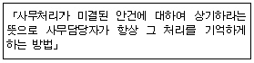

사무자동화산업기사 (2005-03-20 기출문제)
1과목: 사무자동화 시스템
1. 다음 인터페이스에 대한 설명 중 가장 거리가 먼 것은?
- 인터페이스는 기기와 기기사이의 접속부분이다.
- 맨-머신 인터페이스는 인간과 기계사이의 접속부분이다.
- 맨-머신 인터페이스는 컴퓨터와 기계간 협력해서 목적을 달성하려는 시스템이다.
- OA는 전형적인 고도의 맨-머신 인터페이스이다.
(정답률: 55%)

2. 사용자가 프로그램을 수행할 수 있는 환경을 제공하여 컴퓨터 시스템을 보다 편리하고 효율적으로 관리하고 이용하는 운영체계(OS)의 목적에 해당되지 않는 것은?
- 정확한 의사 결정
- 사용자 인터페이스 제공
- 컴퓨터 시스템의 성능 향상
- 데이터 처리의 향상
(정답률: 70%)
3. 다음 중 사무자동화 정의에 적용되는 4요소를 가장 옳게 나열한 것은 ?
- 기계화기술, 통신기술, 시스템과학, 경영관리기술
- 컴퓨터기술, 인간관리기술, 언어기술, 행동과학
- 컴퓨터기술, 통신기술, 시스템과학, 행동과학
- 경영관리기술, 자동화기술, 시스템과학, 인간공학
(정답률: 81%)
4. 시스템의 안전관리 대책으로서 안전관리 기능에 해당되지 않는 사항은?
- 데이터의 암호화
- 액세스 제어
- 디지털 서명
- 데이터의 일관성
(정답률: 78%)
5. 사용자가 보조기억장치의 전체 용량에 해당하는 기억장소를 컴퓨터가 가지고 있는 것으로 생각하여 주기억장소의 용량보다 큰 프로그램을 작성할 수 있도록 하는 개념의 메모리는?
- Cache memory
- Virtual memory
- Associate memory
- Buffer memory
(정답률: 73%)
6. 다음 중 DRAM(Dynamic RAM)의 특성과 거리가 먼 것은?
- 전원이 공급되어도 일정한 기간이 지나면 내용이 지워진다.
- 주기적으로 Refresh 동작이 필요하다.
- 속도가 빠르고 전력 소모가 비교적 적다.
- 전원이 공급되는 동안은 저장된 정보는 절대적으로 손실되지 않는다.
(정답률: 59%)
7. 멀티미디어 활용이 보편화되면서 다양한 입력 기술이 개발되었다. 사진이나 그림과 같은 인쇄된 화상 정보를 컴퓨터 자료로 입력할 수 있는 기술은?
- 프린터를 이용한 출력 기술
- 마우스를 이용한 입력 기술
- 키보드를 이용한 문자 입력 기술
- 스캐너를 이용한 입력 기술
(정답률: 96%)
8. 어떤 데이터를 기억장치로부터 읽거나 기억시킬 때 명령이 시작된 순간부터 명령의 수행이 완료되는 순간까지 소요되는 시간은?
- Access Time
- Seek Time
- Search Time
- Read Time
(정답률: 77%)
9. 다음 중 사무자동화 계획에 포함되지 않는 전략은?
- 제품품질관리전략
- 성과측정전략
- 조직관리전략
- 기술집약전략
(정답률: 50%)
10. 다음 중 마이크로필름의 특성 및 장점이 아닌 것은?
- 정보를 고축소화 할 수 있다.
- 보존이 반영구적이다.
- 보관공간이 많이 필요하다.
- 기밀유지가 효과적이다.
(정답률: 72%)
11. 다음 중 사무자동화의 기능으로서 적당하지 않은 것은?
- 문서화 기능
- 통신 기능
- 업무의 자동화 기능
- 프로그램의 개발 기능
(정답률: 80%)
12. 다음 중 보조기억장치에 해당되지 않는 것은?
- 자기코어
- 자기드럼
- 자기디스크
- 자기테이프
(정답률: 58%)
13. OA의 궁극적 기대효과에 속하지 않는 것은 ?
- 최적화된 시스템 구축
- 사무부분의 생산성 향상
- 서류의 표준화로 서식종류 증가
- 조직의 경쟁력 강화
(정답률: 78%)
14. 다음 중 데이터베이스 언어가 아닌 것은?
- 데이터 조작어(DML)
- 데이터 정의어(DDL)
- 호스트(host) 언어
- 질의어(Query Language)
(정답률: 78%)
15. 어떤 돌발적인 사건에 의해 시스템이 하던 일을 잠시 중단한 상태를 무엇이라고 하는가?
- Deadlock
- Interrupt
- Blocking
- system call
(정답률: 63%)
16. 다음 중 데이터베이스 처리의 장점에 해당되는 것은 ?
- 자료의 중복
- 프로그램과 자료간의 의존성
- 용이한 자료접근
- 변화에 대한 적응성 결여
(정답률: 72%)
17. 사무자동화를 통합형으로 추진코자 할 때, 다음 중 관계가 먼 것은 ?
- 전체 회사를 대상으로 추진하여야 할 것
- 구속력 없이 시간을 두고 느슨하게 추진체제를 확립할 것
- 사내 사무관리 제도와 관련되어 있어야 할 것
- 기존 시스템과 원만히 융화되어야 할 것
(정답률: 89%)
18. 클라이언트/서버 모델의 설명으로 옳지 않은 것은?
- 하나 이상의 컴퓨터를 서버로 사용하고 네트워크의 다른 컴퓨터들은 클라이언트로 사용한다.
- 서버는 네트워크를 운영하기 위해 필요한 네트워크 운영체제를 가지고 있다.
- 클라이언트/서버 환경 하에서는 가급적이면 데이터베이스를 사용하지 않는다.
- 클라이언트/서버 환경의 출현이 그룹웨어의 출현과 연관이 있다.
(정답률: 83%)
19. 사무자동화 도입단계 중 가장 먼저 추진되어야 할 것은?
- 목표와 방침 설정
- 추진체제의 확립
- 업무의 분석
- 업무개선과 기기의 도입
(정답률: 70%)
20. 데이터베이스 모델 중 계층적 데이터베이스(hierarchical database)의 특징에 해당하는 것은 ?
- 하나의 부노드(parent node)가 다수개의 자노드(child node)를 갖는다.
- 데이터 상호간의 유연성이 좋다.
- 테이블(table)을 이용해 데이터 상호 관계를 정의한다.
- 다른 데이터베이스로 변환이 쉽다.
(정답률: 56%)
2과목: 사무경영관리 개론
21. 프로그램 저작권자가 불명인 프로그램은 누구의 승인을 얻고 사용할 수 있는가?
- 산업자원부장관
- 교육인적자원부장관
- 정보통신부장관
- 프로그램저작권협회장
(정답률: 58%)
22. EDI 서비스 제공의 기능과 관련이 먼 것은?
- 전자문서 전달
- 전자문서 변환
- 빌딩자동화
- 우편함 기능
(정답률: 74%)
23. 다음 중 전자상거래 당사자 또는 타인증기관에 대하여 그 실재 및 동일성 여부를 보증하는 기관을 무엇이라 하는가?
- 인증기관
- 전자대행기관
- 검증기관
- 결재기관
(정답률: 66%)
24. "사무는 경영의 정보를 행동으로 결합시키는 과정" 이라고 정의한 사람은?
- 레핑웰(Leffingwell)
- 리틀필드(Littlefield)
- 테리(Terry)
- 포레스터(Forrester)
(정답률: 70%)
25. 사무통제 방법 중 다음은 어디에 해당하는가?

- 자동독촉제도(come up system)
- 카드색인제도(tickler system)
- 보고제도(Report System)
- 간트도표(Gantt chart)
(정답률: 47%)
26. 합리적 사무조직을 편성하거나 유효하게 관리하기 위한 행동지침으로서 사무조직의 원칙과 거리가 먼 것은?
- 명령 통일의 일원화 원칙
- 권한 위임의 원칙
- 통제 범위의 적정화 원칙
- 지휘 체계의 다양화 원칙
(정답률: 70%)
27. 사무자동화의 주요 목적으로 거리가 가장 먼 것은?
- 사무업무의 효율화
- 업무의 세분화
- 유효성 향상
- 창조성 향상
(정답률: 52%)
28. 프로그램의 저작권은 어느 때부터 발생하는가 ?
- 프로그램이 사용된 때
- 프로그램이 창작된 때
- 프로그램이 등록된 때
- 프로그램이 활용된 때
(정답률: 80%)
29. 사무관리와 전통적 조직의 수평적 구조인 재무관리, 생산관리, 판매관리(부문관리) 등의 관계를 설명한 것 중 가장 적합한 것은?
- 사무관리는 관리라는 측면에서 각 부문관리와 병립한다.
- 사무관리는 부문관리에 종속된 개념으로 해석할 수 있다.
- 사무관리는 부문관리와 상호독립해서 존재하는 것이 아니라 공통적인 요소에 관점을 둔다.
- 사무관리가 각 부문관리를 통합하는 상위 개념으로 볼 수 있다.
(정답률: 66%)
30. 사무조직 중 라인 스텝조직의 장점이 아닌 것은?
- 시간적인 여유를 가지고 의사결정을 할 수 있다.
- 지휘 명령계통의 일관성을 유지할 수 있다.
- 전문가를 활용해서 직무의 질을 높이고 능률을 향상시킬 수 있다.
- 일의 숙련이 용이하여 관리자를 비교적 단시일 내에 양성할 수 있다.
(정답률: 47%)
31. 다음 중 의사결정시스템(DSS)의 특징이 아닌 것은 ?
- 반구조적, 비구조적이다.
- 과거 지향적이다.
- 프로그램하기가 비교적 어렵다.
- 전략의 계획 등에 적절하다.
(정답률: 65%)
32. 정보의 수집부터 작성까지를 여럿이 분담하여 처리하는 것으로 각 사무원이 각기 맡은 처리를 행한 다음 다른 사람에게 넘기는 방식은?
- 개별 처리방식
- 로트(lot) 처리방식
- 유동 작업방식
- 오토메이션(Automation)방식
(정답률: 62%)
33. 표준화된 데이터의 처리를 위하여 어떤 컴퓨터에서 다른 컴퓨터로 전자적 이동을 시키기 위한 것은?
- DTP(Desk Top Publish)
- EDI(Electronic Data Interchange)
- STD(Standardization)
- OA(Office Automation)
(정답률: 81%)
34. 다음 중 전자상거래의 가장 커다란 문제점으로 볼 수 있는 것은 ?
- 소비자 부담 과다
- 거래 지불 체제
- 정보의 제한성
- 상품의 유통
(정답률: 54%)
35. 전자서명을 생성하기 위하여 이용하는 전자적 정보를 무엇이라고 하는가?
- 전자문서
- 정보통신망
- 전자서명생성키
- 통신정보
(정답률: 63%)
36. 사무계획을 특성에 따라 분류할 때 계획의 순응능력에 따른 분류는?
- 구조계획과 과정계획
- 장기계획과 단기계획
- 고정계획과 신축계획
- 표준계획과 개별설정계획
(정답률: 36%)
37. 사무분류의 원칙 중 대분류에서 중분류, 중분류에서 소분류, 다시 소분류에서 세분류 등과 같이 단계를 세분화하는 방법은 어떤 원칙에 해당되는가?
- 총합의 원칙
- 점진의 원칙
- 근접의 원칙
- 일관성의 원칙
(정답률: 74%)
38. 사무 간소화에 이용되는 동작연구와 시간연구의 기법과 거리가 먼 것은 ?
- 서식 절차 도표
- 기구 도표
- 작업 도표
- 서식 경로 도표
(정답률: 64%)
39. 프로젝트조직과 기능식 조직을 합한 조직형태는 어떤 조직 인가?
- 행렬 조직
- 혼합프로젝트 조직
- 직능별 조직
- 사업부제 조직
(정답률: 44%)
40. 다음 중 문서관리의 가장 바람직한 방안이 아닌 것은?
- 문서 담당자의 재량권을 최대한 인정하여 나름대로 판단할 수 있는 요소를 증가시키도록 해야 한다.
- 문서의 처리를 빠르게 할 수 있도록 하여야 한다.
- 문서의 처리와 작성 및 취급이 쉽고 간편하여야 한다.
- 인건비와 사무관리비를 절감할 수 있도록 분산관리 보다는 집중관리를 강구해야 한다.
(정답률: 43%)
3과목: 프로그래밍 일반
41. 자료객체에 관한 설명으로 옳지 않은 것은?
- 파일, 상수와 같이 프로그램이나 시스템에서 정의한 것이다.
- 컴퓨터 저장소의 정적인 조직이다.
- 프로그램 실행중에는 여러 형의 다른 객체가 존재한다.
- 가상컴퓨터에서 실행시 하나 이상의 객체 묶음이다.
(정답률: 54%)
42. 운영체제에서 제어 프로그램(control program)에 해당하는 것은?
- 언어번역(language translator) 프로그램
- 서비스(service) 프로그램
- 자료관리(data management) 프로그램
- 문제(problem) 프로그램
(정답률: 67%)
43. 인터프리터 기법을 사용하는 경우의 특징이 아닌 것은?
- 사용상에 있어서 융통성(flexibility)이 있다.
- 기억장소가 추가로 필요하다.
- 프로그램을 한 줄씩 번역하여 곧바로 실행시킨다.
- 반복문이 많을 경우 컴파일 기법에 비하여 유리하다.
(정답률: 64%)
44. 일반적 프로그래밍 언어에서 다중 택일문에 해당하지 않는 것은?
- 계산형 GOTO 문
- CASE 문
- SWITCH 문
- FOR 문
(정답률: 53%)
45. C 언어의 기억 클래스 종류가 아닌 것은?
- 자동(automatic) 변수
- 동적(dynamic) 변수
- 레지스터(register) 변수
- 외부(external) 변수
(정답률: 69%)
46. 다른 메모리 공간의 주소를 포함하고 있는 메모리 위치로 나타내는 자료 객체는?
- 집합
- 포인터
- 리스트
- 문자열
(정답률: 67%)
47. BNF 심볼에서 정의를 나타내는 기호는?
- ㅣ
- ::=
- < >
- ==
(정답률: 90%)
48. C 언어에서 데이터 형식을 규정하는 서술자로서 의미가 옳지 않은 것은?
- %d : 8진정수(Octal integer)
- %c : 문자(character)
- %s : 문자열(string)
- %x : 16진정수(hexadecimal)
(정답률: 76%)
49. 그림이나 도형, 그래프, 설계도면 등을 인쇄용지에 출력하고자 할 때 가장 적합한 장치는?
- MICR
- 바코드 스캐너
- OCR
- XY 플로터
(정답률: 76%)
50. 단항(unary) 연산에 해당하는 것은?
- OR
- AND
- XOR
- NOT
(정답률: 84%)
51. 시스템 프로그래밍 언어로서 가장 적당한 것은?
- C
- COBOL
- PASCAL
- FORTRAN
(정답률: 93%)
52. 다음 프로그램 중 성격이 나머지 셋과 다른 것은?
- assembler
- compiler
- interpreter
- linker
(정답률: 70%)
53. 구문분석기가 처리한 문장에 대해 그 문장의 구조를 트리형태로 표현한 것을 무엇이라 하는가?
- 구조 트리
- 구문 트리
- 파스(parse) 트리
- 분석 트리
(정답률: 81%)
54. C 언어에 대한 설명으로 옳지 않은 것은?
- 구조적 프로그래밍이 가능하다.
- 시스템 소프트웨어를 작성하기에 편리하다.
- 기계어에 해당한다.
- 이식성이 높은 언어이다.
(정답률: 70%)
55. 동적바인딩(Dynamic Binding)이 이루어지는 시간이 아닌것은?
- 프로그램 호출 시간
- 모듈의 기동 시간
- 실행시간 중 객체 사용시점
- 번역 시간
(정답률: 70%)
56. Shift-Reduce 파싱이라고도 하며, 주어진 문자열이 시작 심볼로 축약될 수 있으면 올바른 문장이고, 그렇지 않으면 틀린 문장으로 간주하는 파싱 방법은?
- 상향식(bottom-up) 파싱
- 하향식(top-down) 파싱
- LR 파싱
- LALR 파싱
(정답률: 61%)
57. 객체지향 언어에서 객체(object)의 구성을 나타낸 것은?
- object = program + operator
- object = member function + data
- object = class + class
- object = class + member function
(정답률: 66%)
58. 연산기호가 오퍼랜드들 다음에 오는 표기법은?
- Prefix 표기법
- Postfix 표기법
- Infix 표기법
- Outfix 표기법
(정답률: 66%)
59. 프로그래밍 언어 중에서 스트림(stream) 자료 활용의 예가 많은 언어는?
- PL/1
- SNOBOL 4
- C++
- Ada
(정답률: 67%)
60. 정규표현(Regular Expression)을 받아들이는 효율적인 오토마타(automata)는?
- 유한 상태 오토마타
- 푸쉬다운 오토마타
- 튜링 머쉰
- 선형 제한 오토마타
(정답률: 68%)
4과목: 정보통신 개론
61. OSI 7계층 참조모델을 크게 상위레벨과 하위레벨로 구분할 수 있다. 다음 중 하위레벨에 해당하지 않는 계층은?
- 물리 계층
- 네트워크 계층
- 트랜스포트 계층
- 데이터링크 계층
(정답률: 69%)
62. 디지털 신호를 아날로그 신호로 변환시키는 방법 중 0과 1에 따라 주파수를 변화시키는 변조 방식은 ?
- ASK
- FSK
- PSK
- QAM
(정답률: 62%)
63. 통신회선의 다중화를 함으로서 얻어지는 가장 큰 장점은?
- 에러정정이 쉽다.
- 송·수신 시스템이 간단하다.
- 선로의 공동이용이 가능하다.
- 전송속도가 현저히 빨라진다.
(정답률: 66%)
64. 위성통신의 특징을 잘못 표현한 것은?
- 광대역 통신이 가능하다.
- 광범위한 지역에 서비스를 제공할 수 있다.
- 대용량, 고품질의 정보 전송이 가능하다.
- 전파지연이 없으나 감쇄현상이 나타날 수 있다.
(정답률: 70%)
65. ISDN을 사용하는 경우 얻어지는 특징이 아닌 것은?
- 사용자는 단일/복수의 다른 사용자와 동시에 교대로 음성, 문자, 데이터 통신서비스를 제공받을 수 있다.
- 단일 가입자 번호로 다양한 종류의 서비스를 제공받을 수 있다.
- 초고속망용이므로 저속용 전화, FAX, DATA, CATV 등의 통신 서비스를 제공받기가 어려워진다.
- 많은 부가가치를 얻을 수 있다.
(정답률: 74%)
66. 다음 중 데이터 통신에서의 변복조 방식이 아닌 것은?
- 진폭편이 변조(ASK)
- 위상편이 변조(PSK)
- 주파수편이 변조(FSK)
- 주파수 디지털 변조(PDK)
(정답률: 80%)
67. 멀티미디어 표준화방식에서 동화상 압축 표준화에 해당되는 것은?
- JPEG
- MPEG
- MHEG
- HTTP
(정답률: 81%)
68. 다음 중 광통신의 장점으로 맞지 않은 것은?
- 세심경량성
- 광대역성
- 보안성
- 전기적 유도성
(정답률: 64%)
69. 정보통신에서 통신처리의 설명 중 가장 적합한 것은?
- 기계대 기계의 통신에서 일어날 수 있는 과정으로써 속도변환, 프로토콜변환 등을 말한다.
- 문자, 도형, 화상 등의 인식과 변환이다.
- 전송 효율화를 위한 교환이나 다중화기능이다.
- 데이터로부터 목적하는 정보를 창출하고 이를 가공하며, 보관하는 일이다.
(정답률: 50%)
70. 브리지(Bridge)에 대한 설명 중 틀린 것은 ?
- LAN과 LAN을 연결한다.
- 프로토콜이 다른 LAN을 확장할 때 사용한다.
- 데이터의 움직임을 제어함으로서 LAN간의 트래픽 양을 조절하는 기능이 있다.
- 데이터링크 계층까지 작동한다.
(정답률: 41%)
71. 다음 중 데이터 전송계라고 볼 수 없는 것은 ?
- DSU
- Microwave
- CPU
- MODEM
(정답률: 62%)
72. 대표적인 문자 위주 프로토콜로 BSC(Binary Synchronous Control)가 있다. 이의 특징으로 적합하지 않은 것은?
- 전이중 전송만 지원한다.
- 에러제어와 흐름제어를 위해서는 정지-대기 방식을 사용한다.
- 점-대-점(Point to point)링크 뿐만 아니라 멀티포인트 링크에서도 사용될 수 있다.
- 주로 동기전송을 사용하나 비동기전송방식을 사용하기도 한다.
(정답률: 62%)
73. ISDN 서비스 중 통신망과 단말기능을 제공하는 서비스로 OSI 상위 4개 계층까지도 지원하는 이용자 측의 서비스는?
- 텔레서비스
- 베어러서비스
- 부가서비스
- D채널 비접속서비스
(정답률: 48%)
74. 시분할방식(Time Sharing System)에 가장 적합한 것은 ?
- 시스템상의 공간적 기능을 분할하는 방식이다.
- 주파수 동기를 맞추어 주는 기능이다.
- 하나의 컴퓨터를 여러 개의 단말기가 공동으로 사용하도록 하는 시스템이다.
- 아날로그 이동통신에 사용되는 통신방식이다.
(정답률: 67%)
75. 다음 중 비교적 좁은 지역(구내 건물 등)에 구성하여 이용하는 대표적인 정보통신망은?
- LAN
- WAN
- VAN
- ISDN
(정답률: 85%)
76. 다음 중 무선계 뉴미디어에 속하는 것은 ?
- WAN
- ISDN
- VAN
- Teletext
(정답률: 65%)
77. PCM 방식에서 음성신호의 경우 표본화 간격에 해당되는 시간은 몇 [μs]인가 ? (단, 표본화 주파수는 8[KHz]이다.)
- 125
- 250
- 500
- 1000
(정답률: 47%)
78. 전송회선을 통신방식에 의해 분류할 때 ON-OFF 무전기에서 사용되는 방식은?
- 단방향회선
- 반이중회선
- 전이중회선
- 4선식회선
(정답률: 77%)
79. 프로토콜(protocol)의 구성요소가 아닌 것은?
- Syntax
- Semantics
- Interface
- Timing
(정답률: 62%)
80. 근거리통신망(LAN)의 액세스 제어방식 중 채널의 상태를 파악하여 채널이 사용 중이면 일정시간 기다렸다가 다시 채널 상태를 살펴본 후 채널이 사용 중이 아닐 때 액세스 하는 방식은?
- CSMA/CD
- 토큰링(Token Ring)
- 토큰버스(Token Bus)
- 폴링(Polling)
(정답률: 68%)
맨-머신 인터페이스는 인간과 기계사이의 접속부분을 의미하며, OA는 사무 자동화를 위한 시스템으로 맨-머신 인터페이스를 활용하는 것이지만, 맨-머신 인터페이스 자체가 OA와 같은 시스템을 의미하는 것은 아니다. 따라서 "OA는 전형적인 고도의 맨-머신 인터페이스이다."는 가장 거리가 먼 설명이다.
맨-머신 인터페이스는 컴퓨터와 기계간 협력해서 목적을 달성하려는 시스템이라는 설명은 맨-머신 인터페이스의 개념을 정확하게 설명하고 있다.